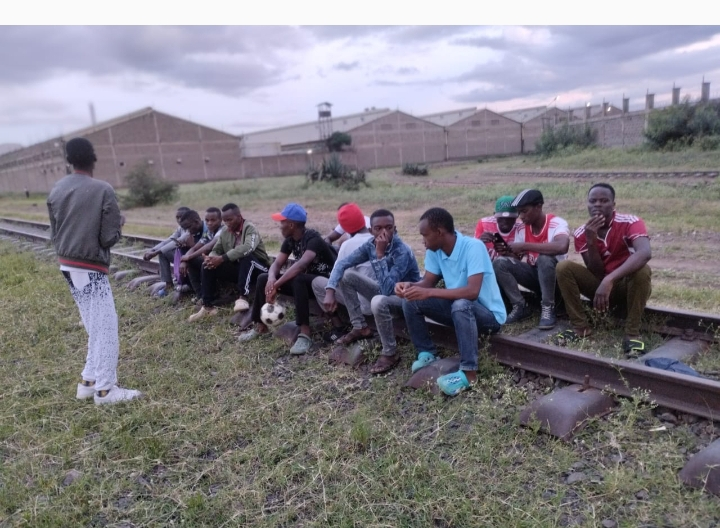
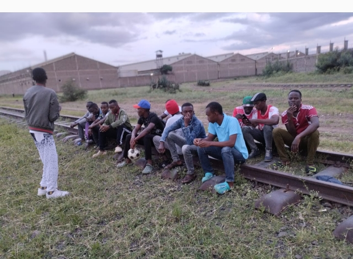

ST JOSEPH CATHOLIC CHURCH SINAI YOUTH
This is a rare photo of the some of the youth members in the field doing
exercise and also practising for the deanary sports

exercise and also practising for the deanary sports

OUR MISSION
To spread love of christ to the fellow youths around
the world and
let them understand the reason why we should know
and serve christ at our young age.
OUR VISSION
To win more souls to christ through spread of the gospel
and sharing what we have with others.
youth chaplain st marys Parish
Fr Barnabas Nyakundi 'Chenendu'

Fr Barnabas Nyakundi 'Chenendu'
welcome to st joseph youth group located Nairobi LungaLunga road Sinai